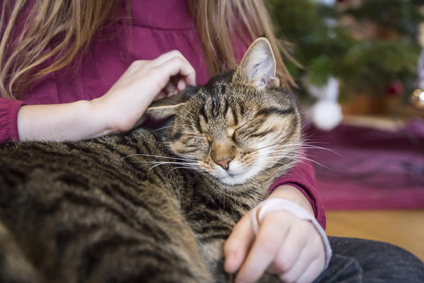

Наряду с тем, что исследования показали отсутствие взаимосвязи длины и цвета шерсти с выработкой Fel d1, одна физическая характеристика действительно имеет отношение к выработке этого белка - это пол кошки.

По результатам некоторых исследований, выработка белка Fel d1 зависит от пола кошки.